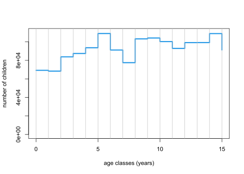
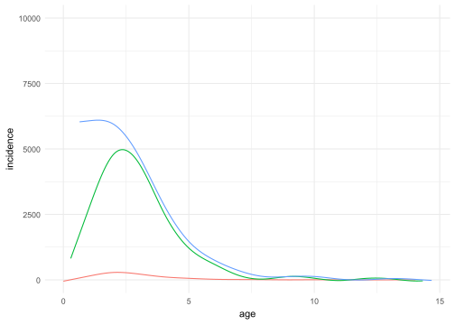
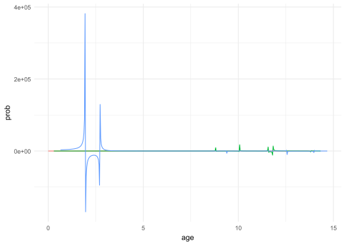

data_file <- "D:/OUCRU/hfmd/data/hfmd_sero.rds"5 2023 HCMC HMFD outbreak
library(dplyr)
library(stringr)
library(purrr)
library(tidyr)
library(magrittr)
library(mgcv)
library(scam)
library(ggplot2)
library(lubridate)predict2 <- function(...) predict(..., type = "response") |> as.vector()hfmd <- data_file |>
readRDS() |>
as_tibble() |>
mutate(collection = id |>
str_remove(".*-") |>
as.numeric() |>
divide_by(1e4) |>
round(),
col_date2 = as.numeric(col_date),
across(pos, ~ .x > 0))
age_profile <- function(data, age_values = seq(0, 15, le = 512), ci = .95) {
model <- gam(pos ~ s(age), binomial, data)
link_inv <- family(model)$linkinv
df <- nrow(data) - length(coef(model))
p <- (1 - ci) / 2
model |>
predict(list(age = age_values), se.fit = TRUE) %>%
c(list(age = age_values), .) |>
as_tibble() |>
mutate(lwr = link_inv(fit + qt( p, df) * se.fit),
upr = link_inv(fit + qt(1 - p, df) * se.fit),
fit = link_inv(fit)) |>
select(- se.fit)
}
age_profile_unconstrained <- function(data, age_values = seq(0, 15, le = 512),
ci = .95) {
data |>
group_by(collection) |>
group_map(~ age_profile(.x, age_values, ci))
}
shift_right <- function(n, x) {
if (n < 1) return(x)
c(rep(NA, n), head(x, -n))
}
age_profile_constrained_cohort2 <- function(data, age_values = seq(0, 15, le = 512),
ci = .95, n = 100) {
dpy <- 365 # number of days per year
mean_collection_times <- data |>
group_by(collection) |>
summarise(mean_col_date = mean(col_date2)) |>
with(setNames(mean_col_date, collection))
cohorts <- cumsum(c(0, diff(mean_collection_times))) |>
divide_by(dpy * mean(diff(age_values))) |>
round() |>
map(shift_right, age_values)
age_time <- map2(mean_collection_times, cohorts,
~ tibble(collection_time = .x, cohort = .y))
age_time_inv <- age_time |>
map(~ cbind(.x, age = age_values)) |>
bind_rows() |>
na.exclude()
data |>
# Step 1:
group_by(collection) |>
group_modify(~ .x |>
age_profile(age_values, ci) |>
mutate(across(c(fit, lwr, upr), ~ map(.x, ~ rbinom(n, 1, .x))))) |>
group_split() |>
map2(age_time, bind_cols) |>
bind_rows() |>
unnest(c(fit, lwr, upr)) |>
pivot_longer(c(fit, lwr, upr), names_to = "line", values_to = "seropositvty") |>
# Step 2a:
filter(cohort < max(age) - diff(range(mean_collection_times)) / dpy) |>
group_by(cohort, line) |>
group_modify(~ .x %>%
scam(seropositvty ~ s(collection_time, bs = "mpi"), binomial, .) |>
predict2(list(collection_time = mean_collection_times)) %>%
tibble(collection_time = mean_collection_times,
seroprevalence = .)) |>
ungroup() |>
# Step 2b:
left_join(age_time_inv, c("cohort", "collection_time")) |>
group_by(collection_time, line) |>
group_modify(~ .x |>
right_join(tibble(age = age_values), "age") |> ### added
arrange(age) |> ### added
mutate(across(seroprevalence,
~ gam(.x ~ s(age), betar) |>
predict2(list(age = age_values))))) |> ### modified
ungroup() |>
pivot_wider(names_from = line, values_from = seroprevalence) |>
group_by(collection_time) |>
group_split()
}constrained_age_profiles_cohort2 <- age_profile_constrained_cohort2(hfmd)5.1 Attack rate
attack_rates <- map2(head(constrained_age_profiles_cohort2, -1),
constrained_age_profiles_cohort2[-1],
~ left_join(na.exclude(.x), na.exclude(.y), "cohort") |>
mutate(attack = (fit.y - fit.x) / (1 - fit.x)))census2019 <- readRDS("D:/OUCRU/hfmd/data/census2019.rds")
age_structure <- census2019 |>
filter(province == "Thành phố Hồ Chí Minh") |>
group_by(age) |>
summarise(n = sum(n)) |>
mutate(across(age, ~ stringr::str_remove(.x, " tuổi| \\+") |> as.integer())) |>
arrange(age) |>
filter(age < 17)
with(age_structure,
plot(age - 1, n, type = "s", ylim = c(0, 110000), col = 4, lwd = 3,
xlab = "age classes (years)", ylab = "number of children"))
abline(v = 0:15, col = "grey")
5.2 Expected incidence from seroprevalence
mod <- lm(n ~ age, age_structure)
incidences <- map(attack_rates,
~ mutate(.x, incidence = (1 - fit.x) * attack *
predict(mod, list(age = age.x))))
incidences %>%
bind_rows(.id = "id") %>%
ggplot(aes(x = age.x, y = incidence,color = id))+
geom_line()+
coord_cartesian(ylim = c(0,20000))+
theme(legend.position = "hide")+
theme_minimal()+
theme(legend.position = "hide")5.3 Incidence of hospitalization
hfmd_incidence <- readRDS("D:/OUCRU/hfmd/data/hfmd_incidence.rds")
incidence1 <- hfmd_incidence %>%
filter(year(adm_date) == 2023) %>%
mutate(adm_date2 = as.numeric(adm_date),
cohort = interval(dob, "2023-01-01") / years(1))
mean_collection_times <- hfmd |>
group_by(collection) |>
summarise(mean_col_date = mean(col_date2)) |>
with(setNames(mean_col_date, collection))
ouut <- list()
for (i in 1:3){
ouut[[i]] <- incidence1 %>%
filter(adm_date2 >= as.numeric(mean_collection_times[i]) &
adm_date2 <= as.numeric(mean_collection_times[i+1])) %>%
mutate(age_gr = cut(cohort, breaks = seq(0,16),right = T)) %>%
na.omit(age_gr) %>%
group_by(age_gr) %>%
count() %>%
mutate(age_gr2 = as.numeric(age_gr)) %>%
gam(n ~ s(age_gr2),data = .) %>%
predict(list(age_gr2 = incidences[[i]]$age.x))%>%
tibble(age = incidences[[i]]$age.x,
incidence = .)
}
ouut %>%
bind_rows(.id = "id") %>%
ggplot(aes(x = age, y = incidence,color = id))+
geom_line()+
coord_cartesian(ylim = c(0,10000))+
theme_minimal()+
theme(legend.position = "hide")
5.4 Probability of hospitalization
map2(ouut, incidences, ~inner_join(.x, .y, by = join_by(age == age.x)) %>%
mutate(prob = (incidence.x/incidence.y)*100)) %>%
bind_rows(.id = "id") %>%
ggplot(aes(x = age, y = prob,color = id))+
geom_line()+
theme_minimal()+
theme(legend.position = "hide")